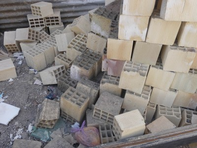
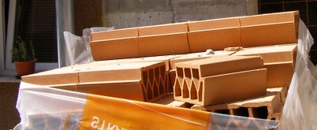
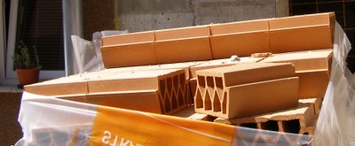

Fired clay hollow blocks or tiles [CLBLH]
Fired clay blocks, lightweight extruded type, with several small perforations. Volume of perforations may range from 25 to 70% of the gross block volume. The perforations are laid in the horizontal direction.

Fired hollow clay bricks with horizontally-laid perforations, Peru (S. Brzev)

Fired hollow clay blocks, Iran (A. Charleson)

Hollow clay masonry blocks and the reinforcing scheme, Chile (Moroni, Gomez, and Astroza, World Housing Encyclopedia Report 5)
 

Hollow clay tile masonry construction, Belgrade, Serbia (S. Brzev)

Fired clay tile masonry wall construction, Albania (C. Scawthorn)

Fired clay hollow blocks as a museum exhibit, Portugal (S. Brzev)